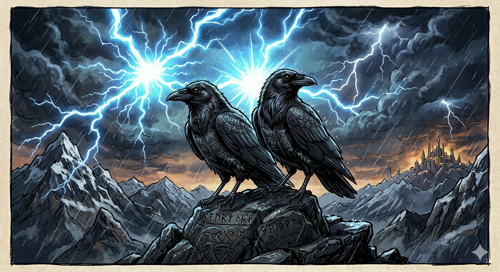
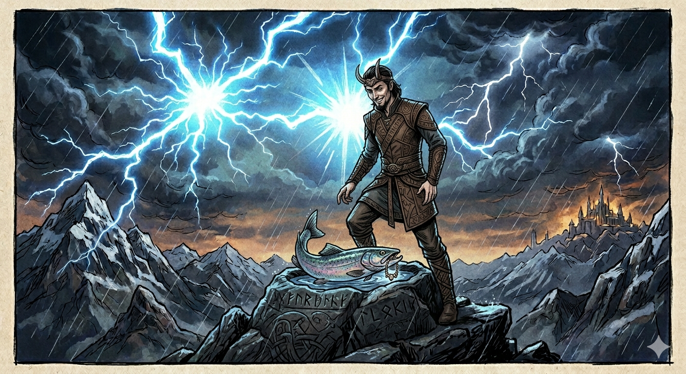

📚 ¿Prefieres leerlo offline?
Esta lectura también está disponible como archivo EPUB descargable, perfecto para leerlo con calma en un lector electrónico, móvil o tablet.
Sobre este anexo
Tre fortellinger fra Norden (Tres relatos del norte) es el anexo final del curso Velkommen til Norge!. Contiene tres microcuentos sobre la mitología nórdica adaptados al nivel A1 del MCER, presentados en formato bilingüe párrafo a párrafo: cada párrafo aparece primero en noruego y a continuación en español.
Cómo leerlo: lee primero el párrafo en noruego. No intentes traducir cada palabra. Cuando una idea no te quede clara, mira el párrafo en español justo debajo. Vuelve al noruego, sigue.
Los textos están adaptados libremente de los relatos del Edda en prosa que Snorri Sturluson compiló en Islandia en el siglo XIII. Los originales están en nórdico antiguo y son ilegibles incluso para los noruegos actuales sin traducción. Aquí encontrarás versiones simplificadas léxica y sintácticamente para A1, manteniendo el esqueleto narrativo del original.
Los tres dioses que protagonizan estos cuentos te resultarán familiares: Tor (Thor), Odin (Odín) y Loki. Sus nombres están en los días de la semana que ya conoces de L2 — y eso no es casualidad.
God lesning! (Buena lectura.)
Cuento 1 · Tor og hammeren
Thor y el martillo

Tor er sterk. Han er den sterkeste guden i Asgard. Han er sønnen til Odin, og han har et stort, rødt skjegg.
Thor es fuerte. Es el dios más fuerte de Asgard. Es hijo de Odín y tiene una gran barba roja.
Men Tor har ikke en hammer ennå. Han trenger et våpen.
Pero Thor todavía no tiene un martillo. Necesita un arma.
Loki er en lur gud. Han kan endre form. Han vil hjelpe Tor, men han vil også ha det gøy.
Loki es un dios astuto. Puede cambiar de forma. Quiere ayudar a Thor, pero también quiere divertirse.
Loki går til dvergene under jorden. Dvergene er små menn med lange skjegg. De er de beste smedene i verden.
Loki va a ver a los enanos que viven bajo la tierra. Los enanos son hombres pequeños con barbas largas. Son los mejores herreros del mundo.
«Lag en hammer til Tor,» sier Loki. «Den må være sterk. Den må alltid komme tilbake til hånden hans.»
«Haced un martillo para Thor», dice Loki. «Tiene que ser fuerte. Tiene que volver siempre a su mano.»
Dvergene jobber i tre dager og tre netter. De lager en hammer av jern og magi. Hammeren heter Mjølnir.
Los enanos trabajan tres días y tres noches. Hacen un martillo de hierro y magia. El martillo se llama Mjølnir.
Men Mjølnir har en feil: hammeren har et kort håndtak. Det er Lokis skyld. Han ble litt redd da dvergene jobbet.
Pero Mjølnir tiene un fallo: el martillo tiene un mango corto. Es culpa de Loki. Se asustó un poco mientras los enanos trabajaban.
Tor får hammeren. Han er glad. Med Mjølnir kan han slå fjell, drepe troll og forsvare Asgard.
Thor recibe el martillo. Está contento. Con Mjølnir puede romper montañas, matar trolls y defender Asgard.
Og når Tor kaster Mjølnir, kommer hammeren alltid tilbake. Som dvergene lovet.
Y cuando Thor lanza Mjølnir, el martillo siempre vuelve. Como prometieron los enanos.
I dag, når det tordner over Norge, sier vi: «Tor er sint.»
Hoy en día, cuando truena en Noruega, decimos: «Thor está enfadado.»
📜 ¿De dónde viene esta historia?
Esta versión está adaptada del Skáldskaparmál, una de las partes del Edda en prosa de Snorri Sturluson (siglo XIII). El nombre Mjølnir ha sobrevivido intacto hasta hoy: lo verás en colgantes que la gente lleva en Noruega, en el escudo de algunos clubes deportivos, y en cualquier película de Marvel.
Cuento 2 · Odins to ravner
Los dos cuervos de Odín

Odin er den eldste guden. Han er sterk og klok, men han har bare ett øye.
Odín es el dios más antiguo. Es fuerte y sabio, pero tiene solo un ojo.
Han ga det andre øyet sitt for å drikke fra Mimirs brønn, en magisk brønn som gir visdom.
Dio su otro ojo para beber del pozo de Mimir, un pozo mágico que da sabiduría.
Men Odin vil vite mer. Han vil vite alt som skjer i verden.
Pero Odín quiere saber más. Quiere saber todo lo que pasa en el mundo.
Derfor har han to ravner. Den ene heter Huginn (det betyr «tanke»). Den andre heter Muninn (det betyr «minne»).
Por eso tiene dos cuervos. Uno se llama Huginn (significa «pensamiento»). El otro se llama Muninn (significa «memoria»).
Hver morgen flyr ravnene ut over verden. De ser alt. De hører alt.
Cada mañana los cuervos vuelan por el mundo. Lo ven todo. Lo oyen todo.
Om kvelden kommer de tilbake til Asgard. De setter seg på skuldrene til Odin.
Por la tarde vuelven a Asgard. Se posan sobre los hombros de Odín.
Huginn forteller hva han har tenkt. Muninn forteller hva han har husket. Slik vet Odin alt.
Huginn cuenta lo que ha pensado. Muninn cuenta lo que ha recordado. Así Odín lo sabe todo.
Men Odin er bekymret. Han sier til seg selv: «Hva hvis Huginn ikke kommer tilbake? Tanker kan forsvinne. Men hva hvis Muninn ikke kommer tilbake? Minner er det viktigste.»
Pero Odín está preocupado. Se dice a sí mismo: «¿Y si Huginn no vuelve? Los pensamientos pueden desaparecer. Pero ¿y si Muninn no vuelve? La memoria es lo más importante.»
Hver kveld venter Odin på ravnene. Hver kveld lytter han. Og hver kveld lærer han noe nytt.
Cada tarde Odín espera a los cuervos. Cada tarde los escucha. Y cada tarde aprende algo nuevo.
I dag, hvis du ser en ravn i Norge, kan du tenke: kanskje den flyr til Odin.
Hoy en día, si ves un cuervo en Noruega, puedes pensar: tal vez vuela hacia Odín.
📜 ¿De dónde viene esta historia?
Adaptado del Gylfaginning, otra parte del Edda en prosa. Los nombres Huginn y Muninn aparecen en el Edda poética (anterior al de Snorri), donde Odín mismo expresa su preocupación por los dos cuervos. La elección entre “pensamiento” y “memoria” — y la idea de que la memoria es más importante — es un guiño cultural escandinavo que la literatura del norte ha retomado muchas veces.
Cuento 3 · Loki og fisken
Loki y el pez

Loki er en gud, men ikke en god gud. Han lyver, han stjeler, han gjør problemer.
Loki es un dios, pero no un dios bueno. Miente, roba, causa problemas.
En dag gjør Loki noe veldig dumt: han forårsaker døden til Balder, sønnen til Odin og den vakreste guden i Asgard.
Un día Loki hace algo muy estúpido: provoca la muerte de Balder, hijo de Odín y el dios más hermoso de Asgard.
De andre gudene er sinte. Veldig sinte. De vil straffe Loki.
Los otros dioses están enfadados. Muy enfadados. Quieren castigar a Loki.
Loki rømmer. Han løper opp i fjellet og gjemmer seg i et lite hus ved en elv.
Loki huye. Corre a la montaña y se esconde en una pequeña casa junto a un río.
Men Loki er smart. Han vet at gudene vil komme. Han tenker: «Jeg må kunne flykte raskt.»
Pero Loki es listo. Sabe que los dioses vendrán. Piensa: «Tengo que poder huir rápido.»
Han bestemmer seg for å lære å bli en fisk. Hver dag sitter han ved elven og tenker på laks.
Decide aprender a convertirse en pez. Cada día se sienta junto al río y piensa en salmones.
For å øve lager han en spesiell ting med tråd og knuter. En slags… nett. Han vil se hvor lett det er å fange en fisk.
Para practicar fabrica una cosa especial con hilo y nudos. Una especie de… red. Quiere ver lo fácil que es atrapar un pez.
Men en dag kommer gudene. De ser huset hans, og de ser det rare nettet.
Pero un día llegan los dioses. Ven su casa, y ven la extraña red.
Loki kaster nettet i ilden og hopper i elven som en laks. Men gudene har sett alt.
Loki tira la red al fuego y salta al río en forma de salmón. Pero los dioses lo han visto todo.
De lager et nytt nett, akkurat som Lokis. Og de fanger ham.
Hacen una nueva red, exactamente igual que la de Loki. Y lo atrapan.
Slik fortelles det: Loki oppfant fiskegarnet uten å ville det. Og slik ble han også fanget med sin egen oppfinnelse.
Así se cuenta: Loki inventó la red de pesca sin querer. Y así fue capturado con su propio invento.
📜 ¿De dónde viene esta historia?
Adaptación del Skáldskaparmál. La paradoja de Loki — un dios tramposo que cae víctima de su propia trampa — es uno de los motivos más universales de la mitología nórdica. Las redes de pesca artesanales noruegas siguen siendo, dicen, “la red de Loki”: una historia que niños y mayores conocen.
Glosario noruego-español
Las palabras que han aparecido en los tres cuentos, en orden alfabético. Las que aparecen con ★ son palabras de uso muy frecuente que conviene memorizar.
| Noruego | Español |
|---|---|
| ★ alt | todo |
| ★ alltid | siempre |
| bekymret | preocupado/a |
| bestemmer seg | decide |
| brønn | pozo |
| drepe | matar |
| dverger | enanos |
| døden | la muerte |
| eldste | más antiguo, más viejo |
| ★ elv | río |
| endre form | cambiar de forma |
| ★ en feil | un fallo, un error |
| flykte | huir |
| flyr | vuela / vuelan |
| forsvinne | desaparecer |
| ★ fortelles | se cuenta |
| forårsaker | provoca, causa |
| gud | dios |
| guden | el dios |
| gøy | diversión |
| ★ ha det gøy | divertirse |
| hammer | martillo |
| husket | recordó |
| ★ hva | qué |
| ★ hver | cada |
| håndtak | mango, asa |
| ilden | el fuego |
| jern | hierro |
| kanskje | quizás, tal vez |
| klok | sabio/a |
| knuter | nudos |
| ★ kort | corto/a |
| laks | salmón |
| lager | hace, fabrica |
| ★ lite hus | una casa pequeña |
| lover | promete |
| lur | astuto/a, listo/a |
| lyver | miente |
| lytter | escucha |
| ★ magi | magia |
| menn | hombres |
| minne | memoria, recuerdo |
| nett | red |
| oppfant | inventó |
| oppfinnelse | invento |
| ★ redd | asustado/a |
| ravn / ravner | cuervo / cuervos |
| rømmer | huye |
| ★ skjegg | barba |
| skulder / skuldrene | hombro / los hombros |
| skyld | culpa |
| ★ slå | golpear |
| smedene | los herreros |
| ★ sterkest | más fuerte |
| stjeler | roba |
| ★ straffe | castigar |
| sønnen | el hijo |
| tanke | pensamiento |
| ★ tenkt | pensado |
| ★ tilbake | de vuelta, de regreso |
| ★ tordner | truena |
| trenger | necesita |
| ★ troll | troll |
| tråd | hilo |
| ★ uten | sin |
| vakreste | más hermoso/a |
| venter | espera |
| ★ verden | el mundo |
| visdom | sabiduría |
| våpen | arma |
| øye | ojo |
Sobre este anexo
Este EPUB cierra el curso Velkommen til Norge!, un microcurso autoformativo de noruego bokmål (nivel A0 → A1) dirigido a hispanohablantes adolescentes con interés en la cultura nórdica.
Las tres historias adaptadas demuestran que, después de cinco lecciones cortas, ya eres capaz de leer literatura en noruego — eso sí, con apoyo de traducción. No es poco. Es exactamente lo que define el nivel A1 según el MCER: comprender textos breves y sencillos sobre temas familiares.
Autora: Noelia Oviedo Marín Curso: Máster en Letras Digitales 2025-2026 Asignatura: Producción de Materiales Educativos Digitales Licencia: Creative Commons BY-NC-SA 4.0
Fuentes principales:
- Snorri Sturluson (siglo XIII). Den yngre Edda (Edda en prosa). Adaptación libre de los textos del Skáldskaparmál y el Gylfaginning.
- Holtsmark, A. (ed.) (2003). Snorre Sturlasson: Den yngre Edda. Oslo: Aschehoug. (Traducción al noruego moderno usada como base).
- Faulkes, A. (ed.) (1995). Edda. Londres: Everyman. (Versión inglesa de referencia para verificación cruzada).
- Universitetet i Bergen — Norrøn filologi. Recursos académicos sobre los mitos nórdicos.